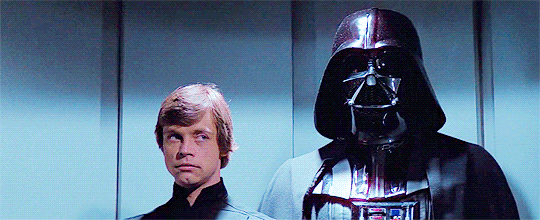

Ever tried to go for a handshake, but the other person was going in for a fist bump? Yikes. Then at the end comes the awkward dance of deciding whether to hug or not.
Step into an elevator, and you'll find yourself in immediate discomfort. "What floor?" is the only non-silent part of this experience with the rest consisting of trying not to make eye contact with the people beside you. Walls were never interesting to look at before. Now they're your best friend
And if you find yourself in a position of small talk, the weather is always a safe topic, right?
From fake phone calls to pretending to be deeply into reading an imaginary text, you too can master the art.
Who needs small talk when you have the power of awkwardness?
One of the top strategies is the Sneaky Phone Glance. Learn how to check your phone without being obvious. This strategy takes skill, and it's okay if you don't quite get it the first time. In time, with practice, you'll be a master.
What were our topics today?
What did we discuss in these topics?